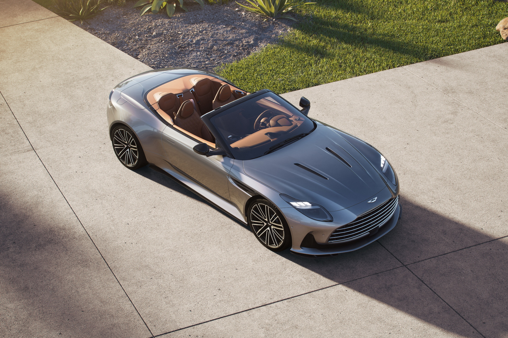

-
Испытание на дороге нового Aston-Martin DB 12 Volante 2024
DB 12 хвалится потрясающим внешним дизайном, который напоминает стройных и изящных людей, встречаемых по всему Лос-Анджелесу и его окрестностям, где суперкар проходил испытания в течение недели.
Он излучает очарование и утонченность, с мощным двигателем и ценником в $265,000, или $331,000 с учетом всех опций и доставки. Давайте ближе рассмотрим, что делает эту машину настолько привлекательной.
В плане обновлений, DB 12 имеет переделанный передний бампер, крыло и дизайн решетки, с более крупной однолопастной решеткой 'DB', которая добавляет нотку британского стиля, а также улучшает эффективность охлаждения на 56%.
Aston-Martin описывает DB 12 как "заточенный на остроту", разработанный для оптимизации потока крутящего момента от передних к задним колесам. Переосмысленная крыша, с ее изящным механизмом складывания, который работает всего за 16 секунд при скоростях до 31 миль в час, добавляет общему обаянию автомобиля и гарантирует, что вы будете привлекать внимание, куда бы вы ни поехали.
17.07.2024